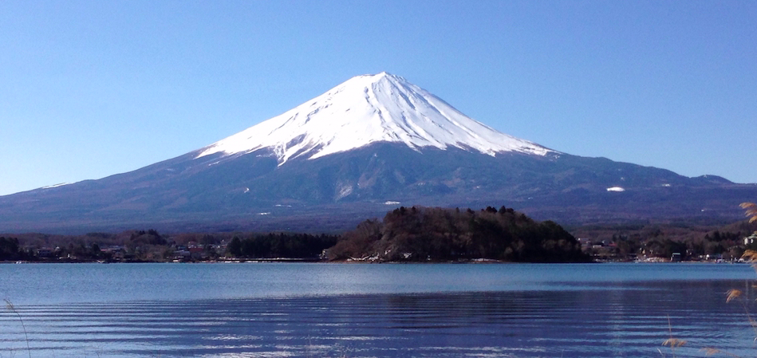
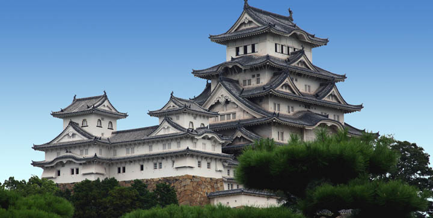

Discover the best places to visit in the country with our list of
the top tourist attractions in Japan.

Mount Fuji
Japan most recognizable landmark, Majestic Mount Fuji is also the country's highest mountain peak.

Imperial Tokyo
With its beautiful 17th century parks surrounded by walls and moats, is a must see when visiting the Nation's capital.

The Island Shrine of Itsukushima
Miyajima is besst known as the home of the Itsukushima, A shinto temple dedicated to the princess daughters of the Win God Susanoo.